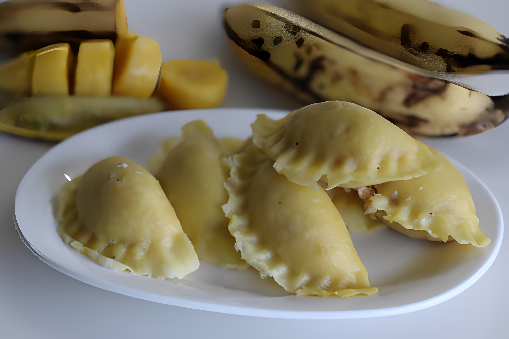

Kozhukatta is a delightful South Indian sweet dumpling
Ingredients
1 cup rice flour
1/2 cup jaggery (grated)
1/2 cup grated coconut
1/4 teaspoon cardamom powder
A pinch of salt
Water (as needed)

Instructions
1.Prepare the Dough
Boil water in a pan and add a pinch of salt.
Gradually add the rice flour to the boiling water, stirring continuously to avoid lumps.
Once the mixture thickens, remove it from heat and let it cool for a bit.
Knead the dough well until it becomes soft and pliable.
2.Make the Filling
In a separate pan, melt the jaggery with a little water to form a syrup.
Add grated coconut to the syrup and mix well.
Stir in the cardamom powder and cook the mixture until it thickens. Remove from heat.
3.Assemble the Kozhukatta
Take a small portion of the rice flour dough and flatten it in your palm.
Place a spoonful of the jaggery-coconut filling in the center.
Seal the edges of the dough, shaping it into a small dumpling.
4.Steam the Dumplings
Arrange the kozhukatta in a steamer and steam them for about 10-15 minutes or until they become firm.
5.Serve
Allow the kozhukatta to cool a bit before serving.
Enjoy these sweet dumplings as a delicious snack or dessert!
Feel free to adjust the sweetness or add your own twist to the recipe. Happy cooking!😋